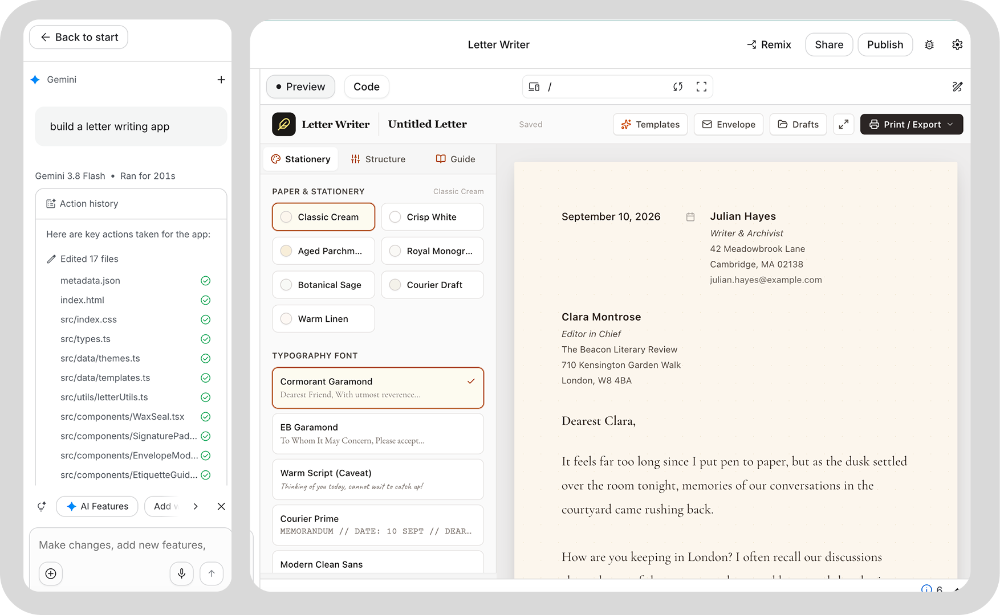
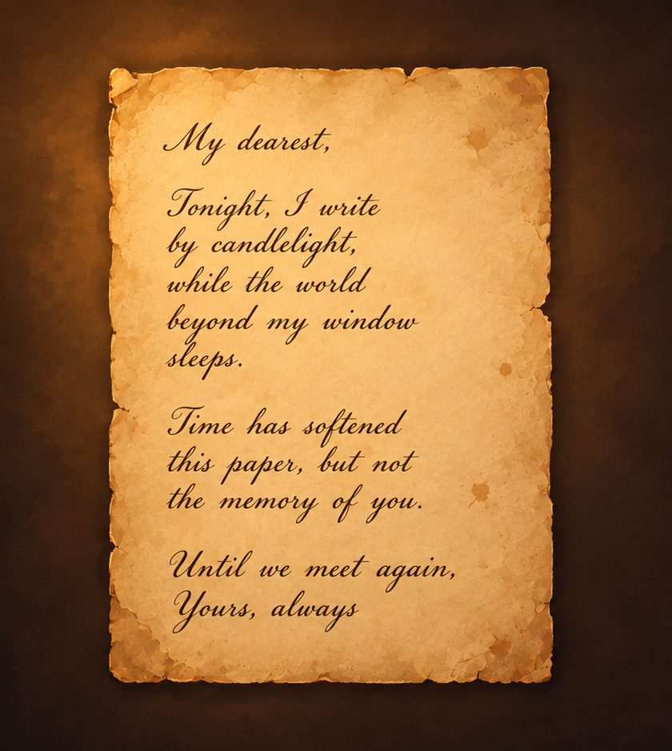

Week 3
Tuesday & Thursday Vibe coding!! — AI studio
✦ Bullet point in class
Though I was already relatively familiar with the process of deployment for vibe coding, these practices still enhanced my skills.
- Upload code to a GitHub repository
- Deploy the repository on Vercel
✦ No agent vibe coded diary app (actually it has)
☹︎ Stage one: Only inputting the prompt without any references brought out problems.
1. First of all, the design was awful!!!!


☹︎ Stage two: Prompted with specific image input and references. These pictures were generated by ChatGPT.



✦ Letter writing app
— Random one (with no restricted prompt)
Prompt: Build a letter writing app

— Letter writing app with design intent
The design intention is:

✦ Feedback from users:
Celena tried my app and discovered that the Letter Writer feature could not actually generate text for her automatically, so I began investigating why. The reason was simple: I had not updated the changes to GitHub. After I did that, the API eventually became functional.
Sync to GitHub and publish to Vercel: